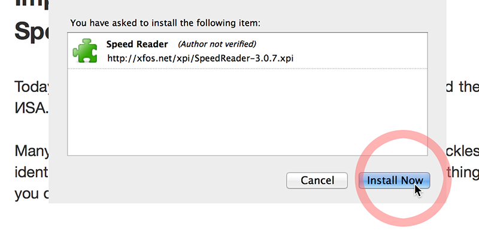
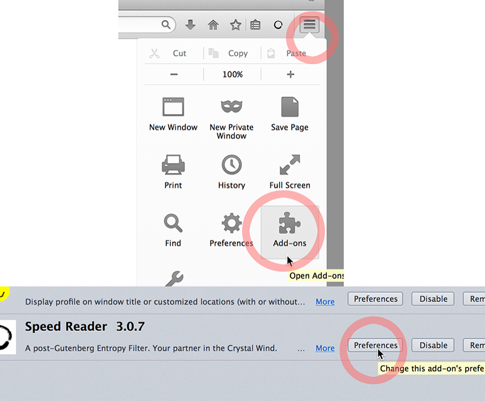
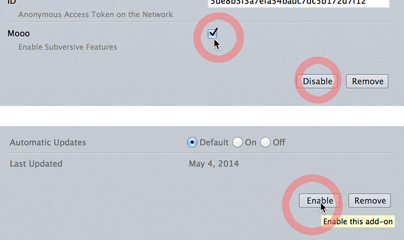
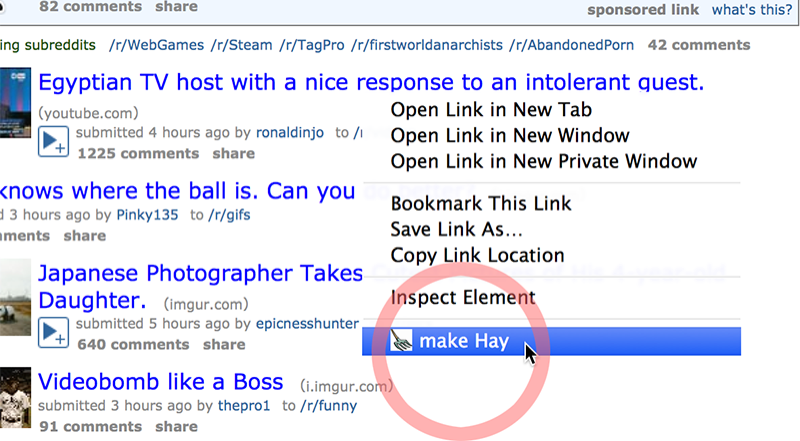
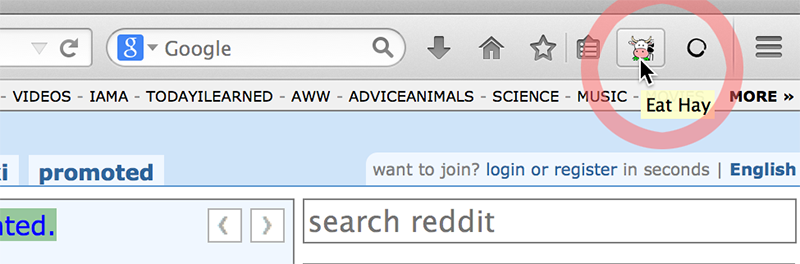

Speed Reader’s Moo.
Today, everyone is tracking you online, Google , Facebook and the ИSA.
Many websites do not honor Do-No-Track, Private Browsing trickles identifying information, and analytics companies track everything you do on the web.
Speed Reader’s Moo mode comes to the rescue.
Mood mode is a new feature in Speed Reader. It helps you harvest web pages. By periodically accessing pages from this stash, Moo creates a crowd to protect your privacy.
Speed Reader requires Firefox 29.0 or newer
1. Install Speed Reader

2. Open the Speed Reader Add-on preferences

3. Turn on the Moo mode, then Disable and Enable to reload Speed Reader.

4. Select make Hay in a Link’s Contextual Menu(right-click or control-click).

5. Click Moo to start.

This will open a new Private window and start randomly browse pages from your haystack every 50 seconds.
You can add hay to your stack from any window at any time.
Click on the button to load to the next random page right away.
Close the window to pause.
The haystack is discarded when you quit Firefox.
Live Free and Be Safe Online.
SHA256(SpeedReader-3.0.7.xpi)= ee580cf8b032a3c68ba56fbdc55364286ac8d46c65cb0d49e487c9952bd94312